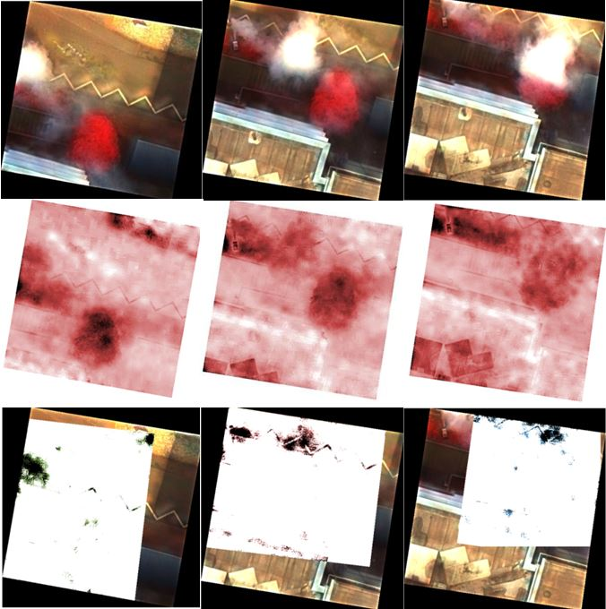

Gas-detect
To perform the simulations several test scenarios were prepared in two campaigns in Karlsruhe and Dortmund. The smoke of Heptane (UN 1206/Kemmler 33) was recorded as well as a mixture from gasoline (1203/33) and diesel (1202/30). A gas leakage was simulated at the Dortmund Fire Brigade Education Center using Methane (\(CH_4\); 1971/23). And a gas cloud containing “chemicals” was simulated by a fog machine which nebulized a 50 % mixture of propylene glycol (propane-1,2-diol) and chlorophyll from the food branch. First analysis eg. for the “unvisible” Methane gas cloud show quite good results using the IR cameras. On UAVs offered by Sitebots and AI Drones two choices of cameras were used:
- OPTRIS PI
- FLIR Vue Pro R
Both cameras give the radiometric signatures and not just “colored pictures”. The Images were spatially referenced by standard procedures. It was found that building differences just show intereferences in the pictures (shown in the first row of Picture 1). Good results were given by a Halcon referencing based on sub pixel accuracy (row two in Picture 1). Using difference analysis on about 25 pictures show a clear signature of the exhaling methane (row three in Picture 1).
Picture 1: Gas cloud detection using thermal imageries

The idea of remotely detecting and identifying chemicals using a hyperspectral sensor is not new. The so called Analytical Task Force (ATF; https://www.bbk.bund.de/DE/AufgabenundAusstattung/CBRNSchutz/TaskForce/ATF_einstieg1.html ) is using the Van-based RAMAN spectroscope SIGIS 2 to detect and identify chemicals in CBRN incidents. The BigGIS project intended to be more flexible than a SIGIS 2 mounted in a car and executed some experiments on the level of a proof-of-concept. A major problem is that light weighted sensors for detecting “interesting” chemicals are not yet on the market due to the need of cooling sensors for being sensitive in the relevant spectrum. Therefore, within the project an available sensor for agricultural use was found. The Sensor Cubert 185 UHD Firefly (http://cubert-gmbh.com/uhd-185-firefly/) has a weight of about 500 g and could easily be mounted on a UAV. Using this sensor “smoke clouds” from a mixture of “Disco fog” and chlorophyll (see above) was scanned using. The first analysis was using just three bands of the hyperspectral cube to calculate the Triangular Chlorophyll Index (https://www.indexdatabase.de/db/i-single.php?id=392) applying the following formular to spetially referenced image cubes:
\(1.2{\left( {700nm-550nm} \right){-1.5} \cdot {\left( {670nm-550nm} \right) \cdot \sqrt{\frac{700nm}{670nm}}}}\)
The result is shown in the picture below: Row one in Picture 2 is showing the chemical cloud migrating from west to east through spatially referenced pseudo color pictures. Interesting is the underground partly paved and partly consisted of a grass strip. In the right picture the cloud covers a small tree.
The TCI algorithm was applied on the three pictures in the middle row. Using a reference aerial photograph and building the difference to such an image (third row) one can find chlorophyll only detected on the asphalt, not on the green strip or the tree due to the fact that the method can not distinguish chlorophyll from the plants from chlorophyll of the cloud.

Picture three now shows the composition of the referenced and analyzed pictures with all three stages of the moving chemical cloud. One now can see the grass strip and the tree in addition to the gas cloud over the asphalt. test